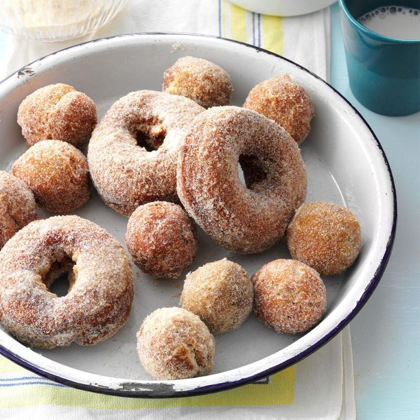

Ingredients
- 2 cups apple cider
- 3 cups all-purpose flour
- 1/2 cup whole wheat flour
- 2/3 cup packed brown sugar
- 2 teaspoons baking powder
- 3/4 teaspoon salt
- 1/2 teaspoon baking soda
- 1/4 teaspoon each ground cardamom, nutmeg, cinnamon and allspice
- 2 large eggs, room temperature
- 6 tablespoons butter, melted and cooled
- Oil for deep-fat frying
- Chocolate Glaze for Doughnuts or Maple Glaze for Doughnuts, optional
Directions
- In a small saucepan, bring cider to a rapid boil; cook over high heat until reduced by half, about 12 minutes. Cool completely.
- Whisk together flours, brown sugar, baking powder, salt, baking soda and spices. In a separate bowl, whisk eggs, melted butter and cooled cider; stir into dry ingredients just until moistened (dough will be sticky). Refrigerate, covered, until firm enough to shape, about 1 hour.
- Divide dough in half. On a floured surface, pat each portion to 1/2-in. thickness; cut with a floured 3-in. doughnut cutter.
- In an electric skillet or deep fryer, heat oil to 325°. Fry doughnuts, a few at a time, until golden brown, 2-3 minutes on each side. Fry doughnut holes, a few at time, until golden brown and cooked through, about 1 minute on each side. Drain on paper towels; cool slightly. If desired, dip doughnuts into glaze or sugar of your